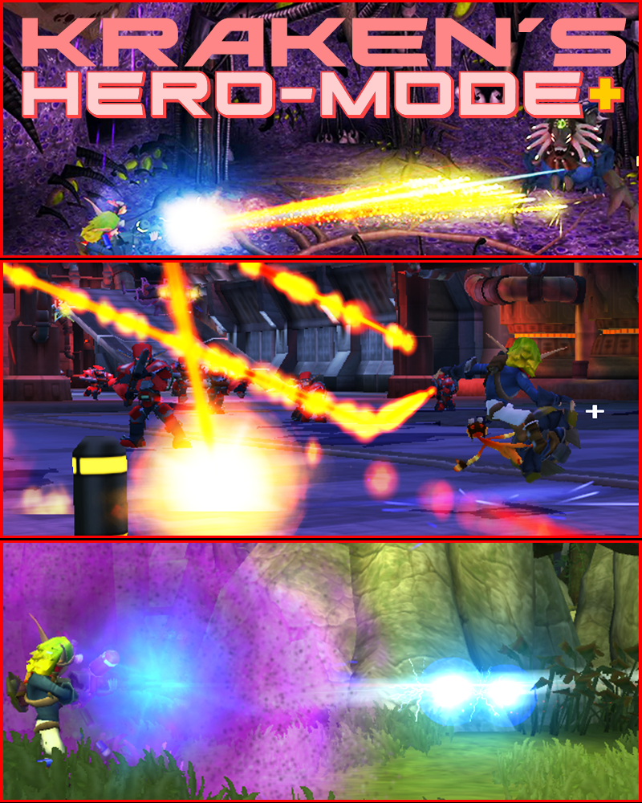
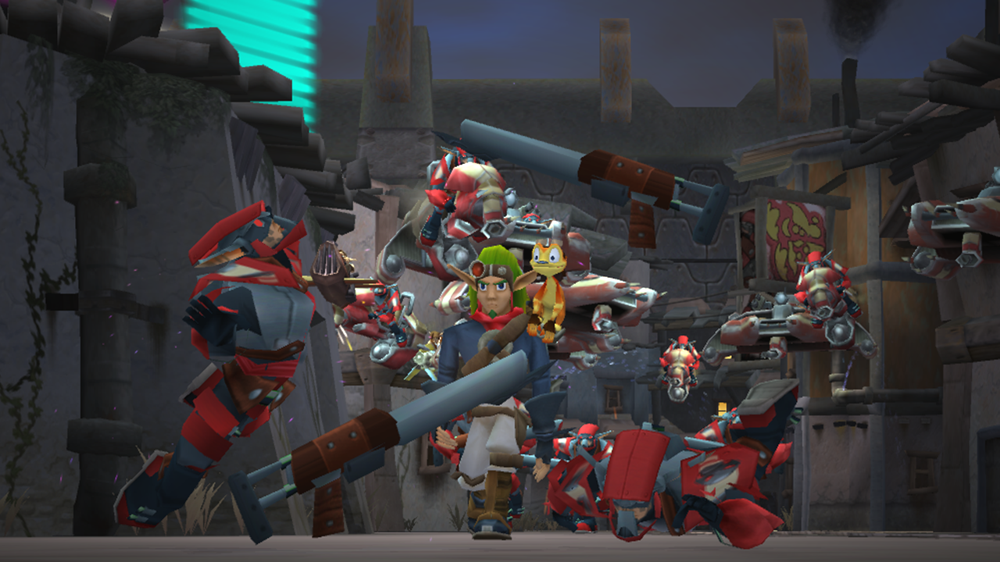
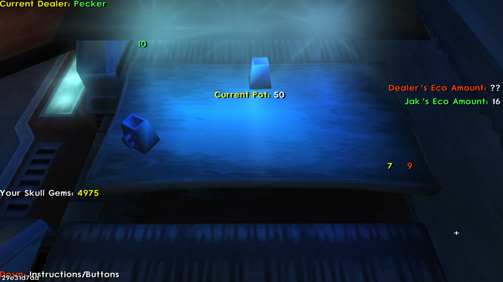
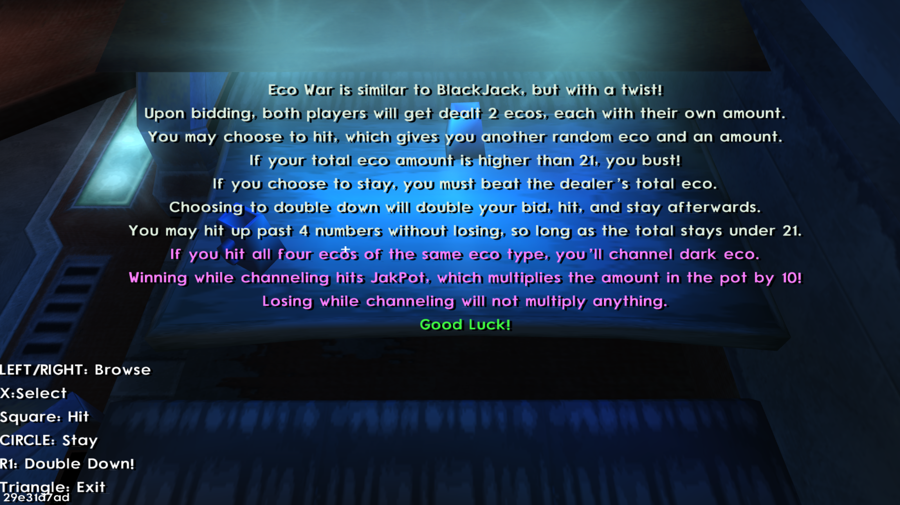

Upscaled Difficulty
Jak II is already a very difficult game. However, for the gamers who've played it countless times over the years, this mod will have a refreshing difficulty without making it a cheap experience.
HeroMode+ | A Jak II Overhaul
A Jak II challenge overhaul that started with traffic experiments. It quickly grew into a full mod built around revitalizing the Jak II experience, making seasoned players feel like they're playing the game for the first time again.

Jak II is already a very difficult game. However, for the gamers who've played it countless times over the years, this mod will have a refreshing difficulty without making it a cheap experience.
The new difficulty is balanced with 9 Gun Modifiers to obtain, and act as an extra behavior towards the 4 weapons in the game.
Gun Modifiers made the game too easy, even after the upscaled difficulty! To fix this, I added a random modifier to be active at all times. Players can re-roll a new modifier at any time
HM+ Jak II Development Log
A summarized walkthrough of the OpenGOAL discoveries that shaped my very first mod.
Jak II is set in a dystopian world 400 years after the first game. The city is filled with pedestrians, zoomers, and the occasional Krimzon Guard patrol.
The starting objective: instead of spawning pedestrians and civilian vehicles, spawn Krimzon Guards and Krimzon vehicles.
This was all I had in mind! I had no intention of making anything more than that.
Video date: 5/28/23The first attempt did not work. Some guards paid attention when alerted, while others needed to be hit individually before they attacked.
The code I edited was the right idea, but the wrong place to execute it. I did not know how the language worked yet, so I kept switching things around to get a feel for the system.
After two days of poking around, I realized the game had a process called traffic-manager, which spawns once when Jak is inside the city.
The traffic manager calculates spawn points in real time, usually off screen. Then an entity of any kind can spawn at the position it generated, including vehicles, several times a second.
I knew exactly where to edit the values: find the array, then change the spawn values of traffic-manager.
Video date: 5/30/23Instead of spawning 16 pedestrians and only 1 or 2 guards, it now spawned 0 pedestrians and 20 guards. The vehicles were affected too.
I am going to mention this once: I absolutely love going the extra mile.
Video date: 5/30/23Since I spent a couple days figuring out Jak II traffic, I also edited the alert-level system. Check out how many guards pop up on the minimap after I go Dark Jak!
Initially, I was going to leave it at that: change the guards, but keep the game vanilla. It did not last long.
I was inspired to push the engine to its limit, just as Naughty Dog did with the PS2. I started looking for attributes I could set to maximum, and found a place to edit turret firing speed in one sewer mission.
Video date: 5/31/23While experimenting, I accidentally edited the turret firing amount. I kept it because it raised the range needed to dodge the turret.
This was where I decided to push values to the best possible limit. HeroMode+ was born.
Over the next 5 months, I looked over all 52 missions in Jak II, trying to make them feel fresh, wacky, and difficult enough to become a proper challenge mod.
The odds were stacked heavily against the player, so I introduced Gun Mods. Later, when those became too powerful, I leveled the field again with Random Modifiers.
A random modifier is active at all times, and all of them have a give & take.
Example: Chanced Trip / Gain 10 Metalheads. Any input can trip Jak, delaying further inputs for a few seconds, but every trip grants Skull Gems.
You can re-roll modifiers to get a different one out of 7 modifiers at any time.
Some of these random modifiers were special, like TP-FB, which stands for Teleport to Final Boss. On death, the player has a chance to get teleported to the MetalKor bossfight, separate from the current save file--but the boss is incredibly difficult! Dying meant loading back the original save that was being played on, which made it cleaner for the player to continue playing the game.
Beating the final boss meant the same thing, but the player is rewarded with a special & satisfying Gun Modifier.
Video date: 10/28/23It was time to share what I had accomplished with the community in a teaser trailer featuring HeroMode+'s changes.
Most of the mod's structure was composed of Lisp components, including a full array of "when" statements spanning over 10,000 lines of code.
I also disabled Unlimited Ammo, Unlimited DarkJak, and Invulnerability to preserve the difficulty of the mod.
It was not long before the release of the mod on 10/28/23.

After HeroMode+, I knew I was still on the frontier of modding in OpenGOAL. I wanted to make some kind of checkpoint randomizer, like the first game had.
The problem is that Jak II has a linear mission progression. How does the game know which mission you completed in the past?
With Jak 1, the game is structured as a collect-a-thon, so randomized checkpoints are more practical. Jak II needs more than a simple change.
This mod was a passion project after all, and I love to make things worthwhile. My next idea was to add a simple mini-game based off of BlackJack.
The game was called Eco War, and was playable in the Hip Hog Heaven Saloon to gamble your skull gems.


You could choose a character from the game as your dealer, and each of them had their own strategy for playing.
Alongside this mini-game, if the player scored 1000 gems or above, and entered the mod menu, they would activate an easter egg.
An unknown character starts speaking to the player directly through text. It states to the player that it has the power to give access to the disabled secrets mentioned above, such as Unlimited Ammo, Unlimited DarkJak, and Invulnerability.

Unbeknownst to the player, this would come at a terrible cost.
After bringing back 1000, 1500, then 2500 gems, the player is instructed to bring back 99999 gems. The player is then granted the ability to have a very large bid amount.
If the player completes this task, the 99999 gems are taken away from the player, and the easter egg begins.
Upon entering the mod menu, it will contain a chilling message: END OF ALL WORLDS ENSURED

The world is then flooded with Dark Eco. Jak and Daxter's main story-driven element, the time loop, is broken. This sets up the story arc for my next upcoming mod to hit the community!